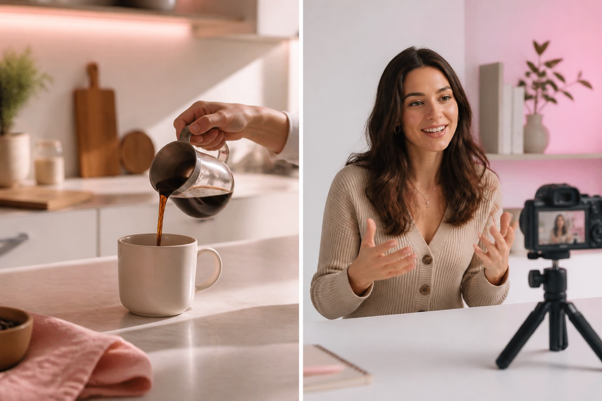

01
Ideas
Three angles from one topic, ranked for a 15–60 second vertical clip.
Free ideas, hooks, a 15–60s spoken script, titles, and captions. No Premiere, no avatar studio, no export dance.

Short-form writing
Most Shorts tools try to render a finished clip. This one stays where the work actually starts: the words you would say, type on screen, and paste under the post.
What you get
Six cards in every pack. Copy, edit, or regenerate any line. The generator does not pretend to be a video studio.
Three angles from one topic, ranked for a 15–60 second vertical clip.
Five openings built for the first three seconds, not a slow intro.
One spoken draft matched to the length you picked, with a clear payoff.
Five title options written for search and the Shorts shelf.
Post copy, a CTA, and lines you can paste under Shorts, TikTok, or Reels.
Short lines that sit in the 9:16 safe zone above the interface chrome.
Generators
Same content pack, four doors: Shorts scripts, TikTok scripts, hooks, or faceless voiceover.
15–60 second spoken drafts, titles, and on-screen text for the Shorts shelf.
Open →First-three-seconds hooks, a timed script, and a caption you can paste in-app.
Open →Five cold opens per topic, written to stop a thumb — not a slow intro.
Open →Voiceover scripts and 9:16 lines for channels that stay off camera.
Open →One prompt to a finished pack
Paste a niche, a product brief, or a half-written thought. The generator returns ideas, hooks, a timed script, titles, and captions you can copy into your next Short.
Generate for Free →Built for vertical
Every pack is written for a phone screen: a cold open, short spoken lines, and captions that won’t sit under the progress bar.
Try a topic
Faceless or on camera
Use the script as a voiceover for B-roll, or as a talking-head draft. The content pack doesn’t lock you into avatars, stock footage, or a video model.
See use cases
Use cases
Pick a lane, generate a pack, then shoot. The tool stays in the writing step so you keep control of the footage.

Batch ideas, hooks, and voiceover scripts for a niche you can post every day.
Read →
Reddit-style stories, ranked lists, and fun-fact scripts with a hard open.
Read →
Turn one concept into a 30-second lesson with a hook, proof, and recap.
Read →
Paste a brief and get a short ad script, titles, and caption variants.
Read →
Turn a long idea into a tight 20-second cut-down you can film or voice.
Read →
One script, then titles and hashtags tuned for Shorts, TikTok, and Reels.
Read →How it works
Four steps. No camera, no editor, no avatar setup.
Type a topic, paste a script, or drop a product brief.
Shorts, TikTok, or Reels. Explainer, story, listicle, or faceless.
Get ideas, hooks, a timed script, titles, captions, and on-screen text.
Edit any line, then shoot or drop the script into your editor.
FAQ
It turns one topic into a spoken draft sized for a 15–60 second vertical clip, plus hooks, titles, captions, and on-screen text. ShortDrafts writes the pack. It does not render a video.
No. You get the writing layer. The camera, the voice, and the edit stay yours. If you need an MP4 from a prompt, this is the wrong tool.
Yes. Set style to Faceless for a voiceover draft and 9:16 lines that work without a talking head. Footage still has to be yours.
ChatGPT will write a paragraph if you ask. This generator returns a pack built for Shorts, TikTok, or Reels: five hooks, one timed script, titles, a caption, a CTA, and on-screen text.
Generate ideas, hooks, scripts, titles, and captions for YouTube Shorts, TikTok, and Reels — without pretending to be a video studio.
Generate for Free